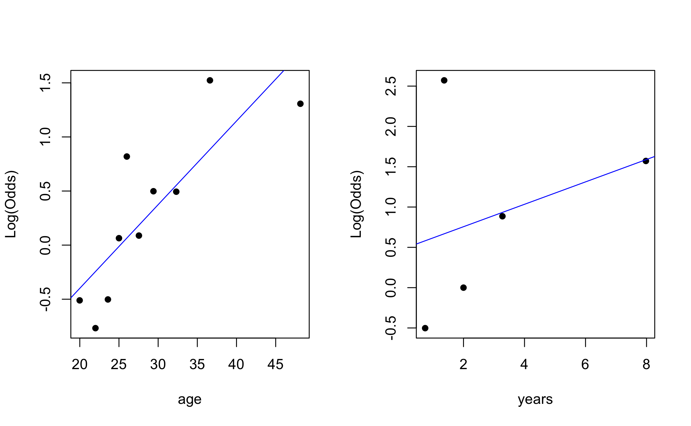

| age | sex | years | ppe_access |
|---|---|---|---|
| 34 | Male | 2 | 1 |
| 32 | Female | 3 | 1 |
| 32 | Female | 1 | 1 |
| 40 | Male | 4 | 1 |
| 32 | Male | 10 | 1 |
Logistic regression
Binomial responses + overdispersion
Prof. Maria Tackett
Feb 07, 2024
Announcements
HW 02 due TODAY at 11:59pm
Project 01
presentations in class Wed, Feb 14
write up due Thu, Feb 15 at noon
Learning goals
Visualizations for logistic regression
Fit and interpret logistic regression model for binomial response variable
Explore diagnostics for logistic regression
Summarize GLMs for independent observations
Logistic regression
Bernoulli + Binomial random variables
Logistic regression is used to analyze data with two types of responses:
- Bernoulli (Binary): These responses take on two values success \((Y = 1)\) or failure \((Y = 0)\), yes \((Y = 1)\) or no \((Y = 0)\), etc.
\[P(Y = y) = p^y(1-p)^{1-y} \hspace{10mm} y = 0, 1\]
- Binomial: Number of successes in a Bernoulli process, \(n\) independent trials with a constant probability of success \(p\).
\[P(Y = y) = {n \choose y}p^{y}(1-p)^{n - y} \hspace{10mm} y = 0, 1, \ldots, n\]
In both instances, the goal is to model \(p\) the probability of success.
Logistic regression model
\[ \log\Big(\frac{p}{1-p}\Big) = \beta_0 + \beta_1x_1 + \beta_2x_2 + \dots + \beta_px_p \]
- The response variable, \(\log\Big(\frac{p}{1-p}\Big)\), is the log(odds) of success, i.e. the logit
- Use the model to calculate the probability of success \[\hat{p} = \frac{e^{\beta_0 + \beta_1x_1 + \beta_2x_2 + \dots + \beta_px_p}}{1 + e^{\beta_0 + \beta_1x_1 + \beta_2x_2 + \dots + \beta_px_p}}\]
- When the response is a Bernoulli random variable, the probabilities can be used to classify each observation as a success or failure
Interpreting coefficients
\[ \log\Big(\frac{\hat{p}}{1-\hat{p}}\Big) = \hat{\beta}_0 + \hat{\beta}_1x_1 + \hat{\beta}_2x_2 + \dots + \hat{\beta}_px_p \]
\(\hat{\beta}_j\) is predicted change in the log-odds when going from \(x_j\) to \(x_j + 1\), holding all else constant
\(e^{\beta_j}\) is the predicted change the odds when going from \(x_j\) to \(x_j + 1\), holding all else constant (odds ratio)
COVID-19 infection prevention practices at food establishments
Researchers at Wollo Univeristy in Ethiopia conducted a study in July and August 2020 to understand factors associated with good COVID-19 infection prevention practices at food establishments. Their study is published in Andualem et al. (2022) .
They were particularly interested in the understanding implementation of prevention practices at food establishments, given the workers’ increased risk due to daily contact with customers.
Results

Interpretation
The (adjusted) odds ratio for availability of COVID-19 infection prevention guidelines is 2.68 with 95% CI (1.52, 4.75).
The odds ratio between workers at a restaurant with such guidelines and those at a restaurant without the guidelines is 2.68.
Interpretation: The odds a worker at a restaurant with COVID-19 infection prevention guidelines uses good infection prevention practices is 2.68 times the odds of a worker at a restaurant without the guidelines, holding all other factors constant.
Visualizations for logistic regression
Access to personal protective equipment
We will use the data from Andualem et al. (2022) to explore the association between age, sex, years of service, and whether someone works at a food establishment with access to personal protective equipment (PPE) as of August 2020. We will use access to PPE as a proxy for wearing PPE.
EDA for binary response
EDA for binary response
Model results
ppe_model <- glm(factor(ppe_access) ~ age + sex + years,
data = covid_df, family = binomial)
tidy(ppe_model, conf.int = TRUE) |>
kable(digits = 3)| term | estimate | std.error | statistic | p.value | conf.low | conf.high |
|---|---|---|---|---|---|---|
| (Intercept) | -2.127 | 0.458 | -4.641 | 0.000 | -3.058 | -1.257 |
| age | 0.056 | 0.017 | 3.210 | 0.001 | 0.023 | 0.091 |
| sexMale | 0.341 | 0.224 | 1.524 | 0.128 | -0.098 | 0.780 |
| years | 0.264 | 0.066 | 4.010 | 0.000 | 0.143 | 0.401 |
Visualizing coefficient estimates
Logistic regression for binomial response variable
Data: Supporting railroads in the 1870s
The data set RR_Data_Hale.csv contains information on support for referendums related to railroad subsidies for 11 communities in Hale County, Alabama in the 1870s. The data were originally collected from the US Census by historian Michael Fitzgerald and analyzed as part of a thesis project by a student at St. Olaf College. The variables in the data are
pctBlack: percentage of Black residents in the countydistance: distance the proposed railroad is from the community (in miles)YesVotes: number of “yes” votes in favor of the proposed railroad lineNumVotes: number of votes cast in the election
Primary question: Was voting on the railroad referendum related to the distance from the proposed railroad line, after adjusting for the demographics of a county?
The data
| County | popBlack | popWhite | popTotal | pctBlack | distance | YesVotes | NumVotes |
|---|---|---|---|---|---|---|---|
| Carthage | 841 | 599 | 1440 | 58.40 | 17 | 61 | 110 |
| Cederville | 1774 | 146 | 1920 | 92.40 | 7 | 0 | 15 |
| Five Mile Creek | 140 | 626 | 766 | 18.28 | 15 | 4 | 42 |
| Greensboro | 1425 | 975 | 2400 | 59.38 | 0 | 1790 | 1804 |
| Harrison | 443 | 355 | 798 | 55.51 | 7 | 0 | 15 |
Exploratory data analysis
Exploratory data analysis
Check for potential multicollinearity and interaction effect.
Model
Let \(p\) be the percent of yes votes in a county. We’ll start by fitting the following model:
\[\log\Big(\frac{p}{1-p}\Big) = \beta_0 + \beta_1 ~ dist + \beta_2 ~ pctBlack\]
Likelihood
\[\begin{aligned}L(p) &= \prod_{i=1}^{n} {m_i \choose y_i}p_i^{y_i}(1 - p_i)^{m_i - y_i} \\ &= \prod_{i=1}^{n} {m_i \choose y_i}\Big[\frac{e^{\beta_0 + \beta_1 ~ dist_i + \beta_2 ~ pctBlack_i}}{1 + e^{\beta_0 + \beta_1 ~ dist_i + \beta_2 ~ pctBlack_i}}\Big]^{y_i}\Big[\frac{1}{e^{\beta_0 + \beta_1 ~ dist_i + \beta_2 ~ pctBlack_i}}\Big]^{m_i - y_i} \\\end{aligned}\]
Use IRLS to find \(\hat{\beta}_0, \hat{\beta}_1, \hat{\beta}_2\).
Model in R
rr_model <- glm(cbind(YesVotes, NumVotes - YesVotes) ~ distance + pctBlack,
data = rr, family = binomial)
tidy(rr_model, conf.int = TRUE) |>
kable(digits = 3)| term | estimate | std.error | statistic | p.value | conf.low | conf.high |
|---|---|---|---|---|---|---|
| (Intercept) | 4.222 | 0.297 | 14.217 | 0.000 | 3.644 | 4.809 |
| distance | -0.292 | 0.013 | -22.270 | 0.000 | -0.318 | -0.267 |
| pctBlack | -0.013 | 0.004 | -3.394 | 0.001 | -0.021 | -0.006 |
\[\log\Big(\frac{\hat{p}}{1-\hat{p}}\Big) = 4.22 - 0.292 ~ dist - 0.013 ~ pctBlack\]
Application exercise
10:00
Residuals
Similar to Poisson regression, there are two types of residuals: Pearson and deviance residuals
Pearson residuals
\[ \text{Pearson residual}_i = \frac{\text{actual count} - \text{predicted count}}{\text{SD count}} = \frac{Y_i - m_i\hat{p}_i}{\sqrt{m_i\hat{p}_i(1 - \hat{p}_i)}} \]
Deviance residuals
\[ d_i = \text{sign}(Y_i - m_i\hat{p}_i)\sqrt{2\Big[Y_i\log\Big(\frac{Y_i}{m_i\hat{p}_i}\Big) + (m_i - Y_i)\log\Big(\frac{m_i - Y_i}{m_i - m_i\hat{p}_i}\Big)\Big]} \]
Plot of deviance residuals

Goodness of fit
Similar to Poisson regression, the sum of the squared deviance residuals is used to assess goodness of fit.
\[\begin{aligned} &H_0: \text{ Model is a good fit} \\ &H_a: \text{ Model is not a good fit}\end{aligned}\]
- When \(m_i\)’s are large and the model is a good fit \((H_0 \text{ true})\) the residual deviance follows a \(\chi^2\) distribution with \(n - p\) degrees of freedom.
- Recall \(n - p\) is the residual degrees of freedom.
- If the model fits, we expect the residual deviance to be approximately what value?
Overdispersion
Adjusting for overdispersion
Overdispersion occurs when there is extra-binomial variation, i.e. the variance is greater than what we would expect, \(np(1-p)\).
Similar to Poisson regression, we can adjust for overdispersion in the binomial regression model by using a dispersion parameter \[\hat{\phi} = \sum \frac{(\text{Pearson residuals})^2}{n-p}\]
- By multiplying by \(\hat{\phi}\), we are accounting for the reduction in information we would expect from independent observations.
Adjusting for overdispersion
- We adjust for overdispersion using a quasibinomial model.
- “Quasi” reflects the fact we are no longer using a binomial model with true likelihood.
- The standard errors of the coefficients are \(SE_{Q}(\hat{\beta}_j) = \sqrt{\hat{\phi}} SE(\hat{\beta})\)
- Inference is done using the \(t\) distribution to account for extra variability
Application exercise
References
Andualem, Atsedemariam, Belachew Tegegne, Sewunet Ademe, Tarikuwa Natnael, Gete Berihun, Masresha Abebe, Yeshiwork Alemnew, et al. 2022. “COVID-19 Infection Prevention Practices Among a Sample of Food Handlers of Food and Drink Establishments in Ethiopia.” PLoS One 17 (1): e0259851.
Roback, Paul, and Julie Legler. 2021. Beyond multiple linear regression: applied generalized linear models and multilevel models in R. CRC Press.